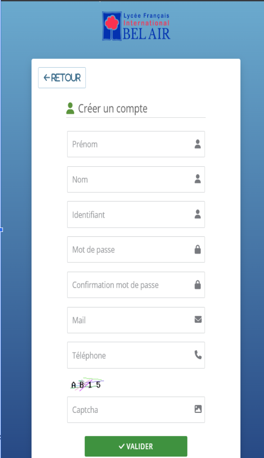

Déploiement Serveur Gestsup (Ticketing)
1. Contexte et Objectif
Mise en place d'une solution de helpdesk (WAMP/LAMP Stack). L'objectif est de centraliser les demandes d'assistance des utilisateurs pour optimiser le temps de résolution.
Installation du serveur (Apache, PHP, MariaDB) et sécurisation via l'outil d'audit Lynis.
📄 Tutoriel : Création compte & Sécurité Lynis2. Cahier des Charges
- Installation d’un serveur de ticketing GestSup, accompagnée de la sécurisation de l’environnement Debian 12 + formation à son utilisation.
- Audit de la configuration des switches réseau.
3. Organisation Sprints (4 Semaines)
Méthode agile adaptée : Focus principal sur Gestsup, avec flexibilité pour la supervision Zabbix et le support.
| Tâches / Sprints | S1 | S2 | S3 | S4 |
|---|---|---|---|---|
| Déploiement LAMP & Gestsup | ||||
| Audit Lynis & Documentation | ||||
| Aide Supervision (Zabbix) | ||||
| Support N1 / Audit Switches |
Fil Rouge (Gestsup)
Tâches annexes
4. Preuves Techniques et Fonctionnelles (E6)


Preuves visuelles : Le serveur web et la base de données sont liés, rendant le tableau de bord Gestsup opérationnel sur le réseau (Photo 1). Le portail utilisateur est également configuré pour permettre la création de comptes et de tickets en toute autonomie (Photo 2).
Compétences validées :
- ✅ Suivre et orienter les demandes
- ✅ Gérer les incidents
- ✅ Sécuriser un équipement (Lynis)